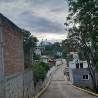

|
|
JANA'A A IYO NU ÑU NUU IX'O NDANDUKU PÁGINA EN ESPAÑOL |
 |
JANA´A NU ÑU KUIÑI Ñuu kuiñi neva´a tu´u ka suvaxo nkuna iyo tu´u ñuu kuiñi, nde jañaguti iyo tu´u nde nexaga ti´a te´e taca´a kaka´a tu´u xtila nda te´e jana nka tavide ñuu kuiñi, nka ndede iyo ndute tee ñuu ka kakide. Ñuu kuiñi ka jini ma´a de naxa kandé-de de suni ka jini de ka koto de nda tiñu jana´a, tanu kúu ve´e ji´ya ja ku in ja ndakiniyo nita ja te´e tu´va nka kuu-de kandeé-de nu ñuu savi. Nu Ñuu Kuiñi de ka sa´a-de uu viko ñuu, in ku yo una de inka yoo axi uu, Ndi-duú viko ya´a nda-sa´a ka´nu nana-yo María. Nde ta ntikoo teé inka ñuu nka stu´va-de tu´u stila. nde saá nka kastu´un ndaá-de naxa ka sa´a-yo viko nde mita ka sa´a ii-yo. |